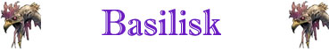

Sguardo Pietrificante;

|
|
Ambiente/Habitat | Qualsiasi (ad eccezione delle zone artiche e ghiacciate) |
| Frequenza | Rare | |
| Organizzazione | Solitario / Piccoli Gruppi | |
| Periodo di Attività | Giorno | |
| Dieta | Carnivora | |
| Intelligenza | Animal Intelligence (1) | |
| Punti Combattimento | Nessuno | |
| Tesoro | Occasionale (nella tana) | |
| Allineamento Dominante | Neutrale | |
| Numero di Apparizione | 1d12: (1-8) 1 (9-12) 1d3+1 | |
| Classe Armatura | 3 [10 base, -6 corazza, -1 destrezza] | |
| Movimento | 8 esagoni | |
| Dadi Vita | 6 (+5 punti ferita) | |
| Thac0 | 14 | |
| Numero di Attacchi | Morso | |
| Danni | 1d8+2 (Taglio) | |
| Poteri Offensivi | Istinto Predatorio; Sguardo Pietrificante; |
|
| Poteri Difensivi | Robustezza Superiore (+5 punti ferita); | |
| Poteri Generici | Nessuno; | |
| Vulnerabilità | Nessuna; | |
| Resistenza alla Magia | Nessuna; | |
| Sensi | Infravisione 18 metri; Sensi Superiori; | |
| Dimensioni | Large (3 m. lunghezza) | |
| Morale | Elite (13) | |
| Valore in Punti Esperienza | 740 |
| MODIFICATORI AI TIRI SALVEZZA | |||||||||||||||||||||||
| COR | 0 | 45 | ENV | 0 | 50 | MAG | +5 | 54 | MAL | 0 | 44 | MEN | 0 | 57 | RIF | 0 | 53 | ROB | +5 | 42 | VEL | 0 | 41 |
Descrizione
Questa creatura mostruosa ha la forma di un grosso rettile. Questa creatura è caratterizzata dall'avere otto zampe, una lunga e flessibile coda, mascelle robuste da lucertola ed occhi brillanti di fredda ed innaturale luce bianca.
Combat
Nonostante sia dotato di forti mandibole capaci di infliggere anche danni seri alle sue vittime il Basilisco concentra tutta la sua forza d'attacco nel suo sguardo pietrificante capace di ridurre in frammenti di creta il corpo delle sue vittime dirigendolo verso le vittime che ritiene di volta in volta più pericolose.
ISTINTO PREDATORIO (Moderate Special Ability): La creatura possiede un forte istinto predatorio, per tale motivo costei riceve un bonus costante di +1 alla Thac0 con i suoi attacchi.
SGUARDO
PIETRIFICANTE
(Powerful Special
Ability): Oltre ad
effettuare una qualsiasi altra azione complessa od attacco, la creature può
fissare il proprio sguardo incrociandolo con quello di
una vittima
che si trovi entro 15 metri di
distanza.
Si tratta di una free action
che impone alla creatura una
penalità all'iniziativa delle successive azioni pari a +1. La
vittima che incrocia lo sguardo pietrificante di questa creatura, dunque, dovrà
immediatamente superare un tiro
salvezza su robustezza. Se il tiro
salvezza fallisce parte del corpo della vittima si disidraterà immediatamente
assumendo la consistenza della creta e sgretolandosi. In particolare la vittima
subirà una perdita di punti ferita
pari al 20% dei suoi punti ferita massimi
(arrotondando il danno per eccesso). Si
noti che questi danni non possono essere curati magicamente né con magie basate
su energia positiva, né con magie di tipo rigenerativo. La vittima, infatti,
recupererà lentamente la perdita di punti ferita subita in questo modo solo al
ritmo di un punto ferita al giorno (non essendo richiesto alcun riposo questo
punto ferita recuperato si cumulerà con la cura delle altre eventuali diverse
ferite subite dalla creatura). Questo potere ha effetto solo sulle creature
dotate di corpo organico di tipo animale che siano dotate di comuni organi
visivi.
ROBUSTEZZA
SUPERIORE
(Typical Ability):
Il fisico di questa creatura è estremamente robusto conferendole una
robustezza superiore
che le garantisce
5
punti ferita supplementari.
Habitat/Society
Il Basilisco è un forte predatore capace di battere avversari fisicamente molto più potenti di lui utilizzando lo sguardo pietrificante. Si aggira solitario, od in casi più rari, in piccoli gruppi, in cerca di prede. Questa creatura mangia proprio le carni delle proprie vittime una volta che sono divenute terriccio e si sono sgretolate dai loro corpi. Questa creatura dimora in anfratti naturali od in tane create tra spaccature rocciose.
Ecology
Dal cadavere di un Basilisk può essere recuperata una pelle squamosa utile per fabbricare 1d2 corazze. La pelle del Basilisk impone allo skinner una penalità di -2 alle relativa prova. Il valore di una pelle adeguatamente ripulita e tagliata è pari a 250 monete d'oro (link).
Mystical Resource Sourge
(Cuore) Quantità: 1, Presenza 50% - Scuola di Magia:
Enchantment
- Qualità della Risorsa:
Common.
Mystical Resource Sourge
(Occhi) Quantità: 2, Presenza 33% -
Effetto Particolare:
Pietra, Roccia e Terra
- Qualità della Risorsa:
Uncommon.
|
|
Ambiente/Habitat | Qualsiasi (ad eccezione delle zone artiche e ghiacciate) |
| Frequenza | Rare | |
| Organizzazione | Solitario | |
| Periodo di Attività | Qualsiasi | |
| Dieta | Carnivora | |
| Intelligenza | Semi-Intelligent (3) | |
| Punti Combattimento | Nessuno | |
| Tesoro | Occasionale (nella tana) | |
| Allineamento Dominante | Neutrale Malvagio | |
| Numero di Apparizione | 1 | |
| Classe Armatura | 2 [10 base, -6 corazza, -2 destrezza] | |
| Movimento | 8 esagoni | |
| Dadi Vita | 8 (+5 punti ferita) | |
| Thac0 | 12 | |
| Numero di Attacchi | Artiglio/Artiglio/Morso | |
| Danni | 1d6+1 (Taglio)/1d6+1 (Taglio)/2d6+3 (Taglio) | |
| Poteri Offensivi | Istinto Predatorio; Sguardo Pietrificante; Veleno; |
|
| Poteri Difensivi | Robustezza Superiore (+5 punti ferita); | |
| Poteri Generici | Nessuno; | |
| Vulnerabilità | Nessuna; | |
| Resistenza alla Magia | Nessuna; | |
| Sensi | Infravisione 18 metri; Sensi Superiori; | |
| Dimensioni | Large (3 m. lunghezza) | |
| Morale | Elite (14) | |
| Valore in Punti Esperienza | 2331 |
|
TIRI SALVEZZA DELLA CREATURA |
|||||||
| CORAGGIO | ENERGIA VITALE | MAGIA* | MALATTIA | MENTE | RIFLESSI | ROBUSTEZZA | VELENO |
| 0 | 0 | +10% | 0 | 0 | +5% | +5% | +5% |
| 42 | 47 | 47 | 41 | 55 | 44 | 39 | 33 |
Descrizione
Questa creatura mostruosa ha la forma di un grosso rettile. Questa creatura è caratterizzata dall'avere otto zampe artigliate, una lunga e flessibile coda, mascelle robuste da lucertola ricolmi di aguzzi denti ed occhi brillanti che irradiano una fredda ed innaturale luce bianca i cui raggi luminosi fuoriescono leggermente dalle orbite.
Combat
Nonostante sia dotato di forti mandibole capaci di infliggere anche danni seri alle sue vittime il Basilisco concentra tutta la sua forza d'attacco nel suo sguardo pietrificante capace di ridurre in frammenti di creta il corpo delle sue vittime dirigendolo verso le vittime che ritiene di volta in volta più pericolose.
ISTINTO PREDATORIO (Moderate Special Ability): La creatura possiede un forte istinto predatorio, per tale motivo costei riceve un bonus costante di +1 alla Thac0 con i suoi attacchi.
SGUARDO PIETRIFICANTE (Powerful Special Ability): Oltre ad effettuare una qualsiasi altra azione complessa od attacco, la creature può fissare il proprio sguardo incrociandolo con quello di una vittima che si trovi entro 15 metri di distanza. Si tratta di una free action che impone alla creatura una penalità all'iniziativa delle successive azioni pari a +1. La vittima che incrocia lo sguardo pietrificante di questa creatura, dunque, dovrà immediatamente superare un tiro salvezza su robustezza. Se il tiro salvezza fallisce parte del corpo della vittima si disidraterà immediatamente assumendo la consistenza della creta e sgretolandosi. In particolare la vittima subirà una perdita di punti ferita pari al 20% dei suoi punti ferita massimi (arrotondando il danno per eccesso). Si noti che questi danni non possono essere curati magicamente né con magie basate su energia positiva, né con magie di tipo rigenerativo. La vittima, infatti, recupererà lentamente la perdita di punti ferita subita in questo modo solo al ritmo di un punto ferita al giorno (non essendo richiesto alcun riposo questo punto ferita recuperato si cumulerà con la cura delle altre eventuali diverse ferite subite dalla creatura). Questo potere ha effetto solo sulle creature dotate di corpo organico di tipo animale che siano dotate di comuni organi visivi.
VELENO
[MORSO]
(Superior Special
Ability):
Il morso
della creatura è dotato di un forte veleno paralizzante:
Onset
1 round,
Effetti
0/Paralizzato
(Hold) per 3 rounds,
Delay
none,
Tiro Salvezza
-5%,
Assuefazione
nessuna.
ROBUSTEZZA
SUPERIORE
(Typical Ability):
Il fisico di questa creatura è estremamente robusto conferendole una
robustezza superiore
che le garantisce
5
punti ferita supplementari.
Habitat/Society
Il Basilisco è un forte predatore capace di battere avversari fisicamente molto più potenti di lui utilizzando lo sguardo pietrificante. Si aggira solitario, od in casi più rari, in piccoli gruppi, in cerca di prede. Questa creatura mangia proprio le carni delle proprie vittime una volta che sono divenute terriccio e si sono sgretolate dai loro corpi. Questa creatura dimora in anfratti naturali od in tane create tra spaccature rocciose.
Ecology
Dal cadavere di un Basilisk può essere recuperata una pelle squamosa utile per fabbricare 1d2 corazze. La pelle del Basilisk impone allo skinner una penalità di -2 alle relativa prova. Il valore di una pelle adeguatamente ripulita e tagliata è pari a 250 monete d'oro (link).
Mystical Resource Sourge
(Cuore) Quantità: 1, Presenza 50% - Scuola di Magia:
Enchantment
- Qualità della Risorsa:
Common.
Mystical Resource Sourge
(Ghiandola Venefica) Quantità: 1, Presenza 20% - Effetto Particolare:
Veleno
- Qualità della Risorsa:
Common.
Mystical Resource Sourge
(Occhi) Quantità: 2, Presenza 33% -
Effetto Particolare:
Pietra, Roccia e Terra
- Qualità della Risorsa:
Uncommon.